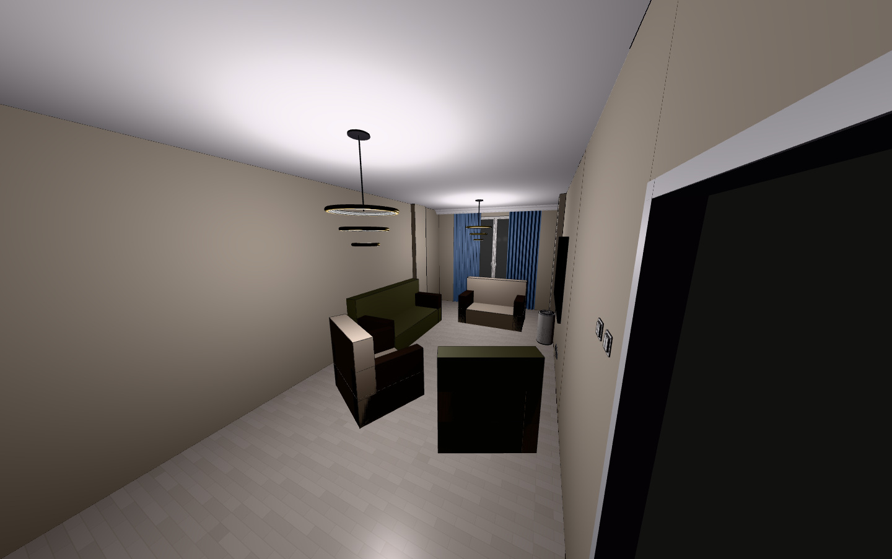
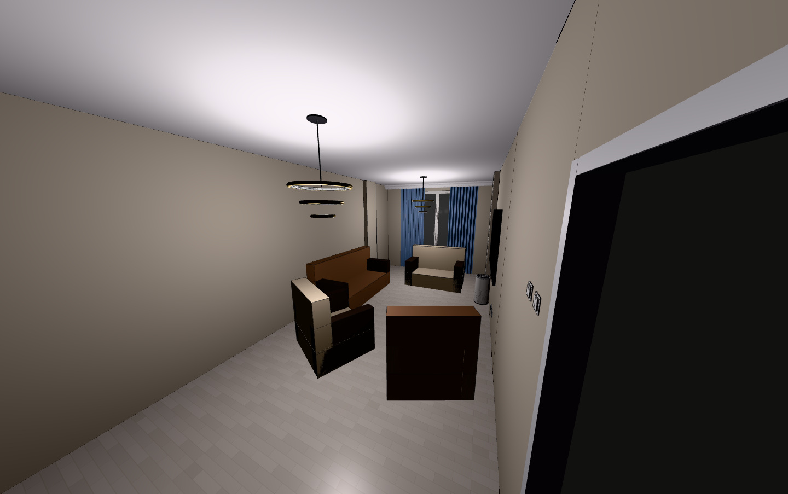
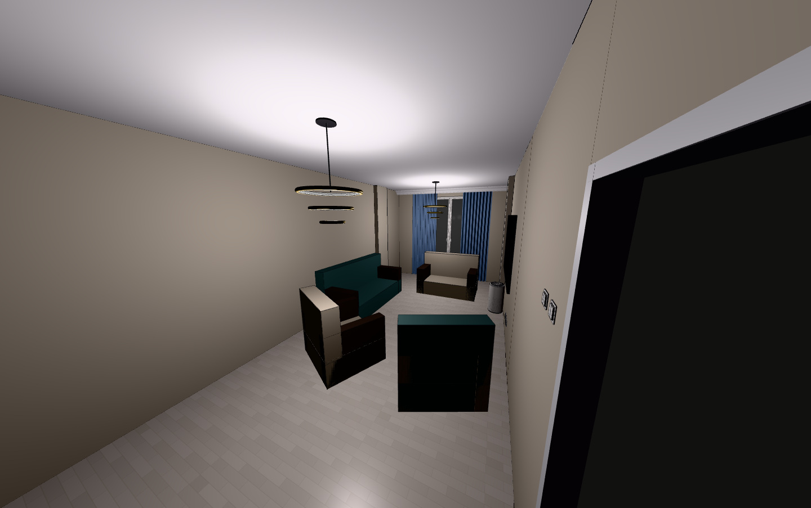
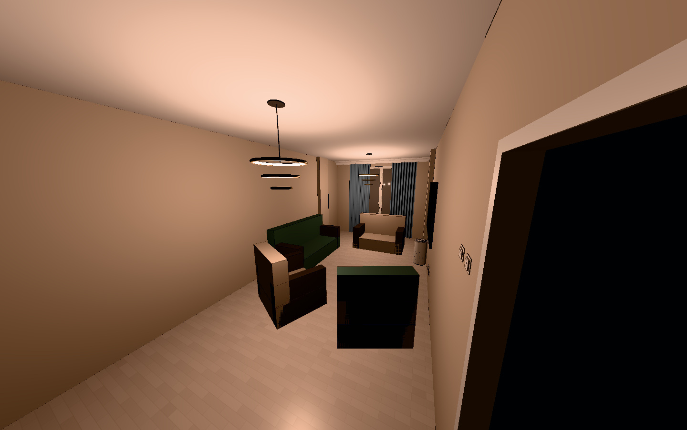
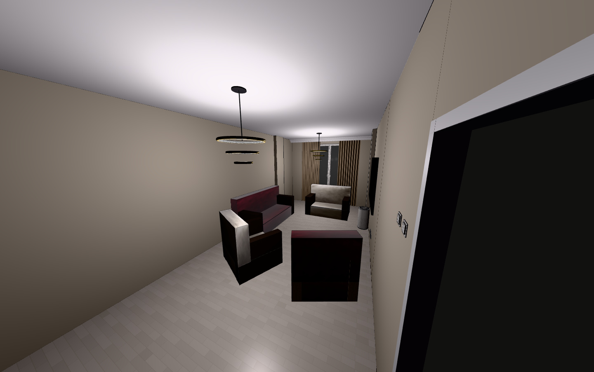
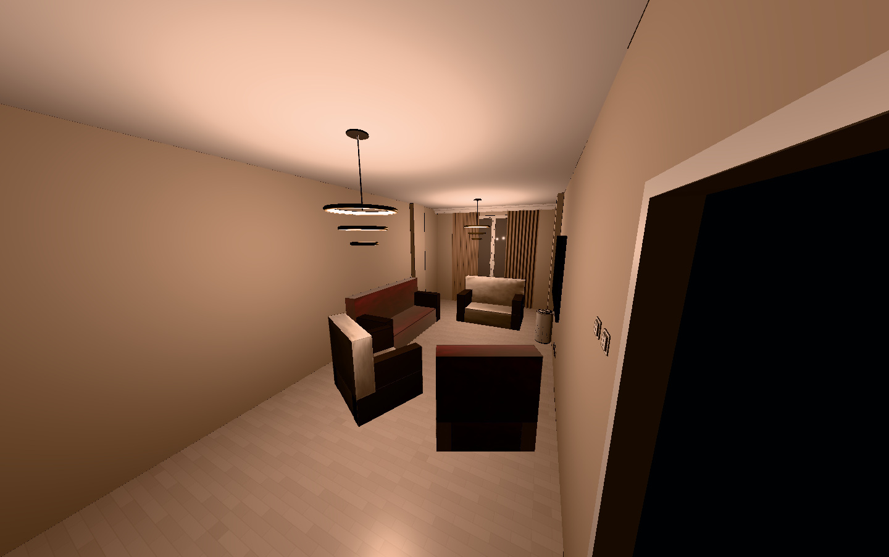
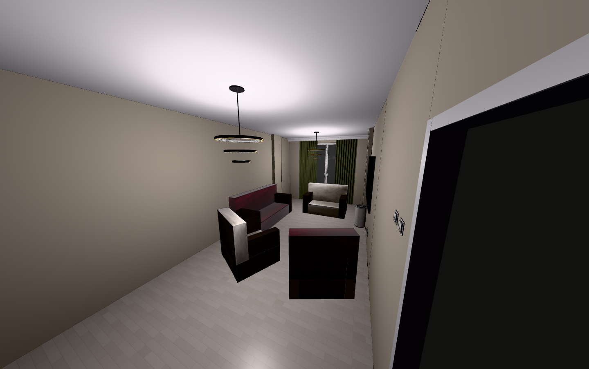
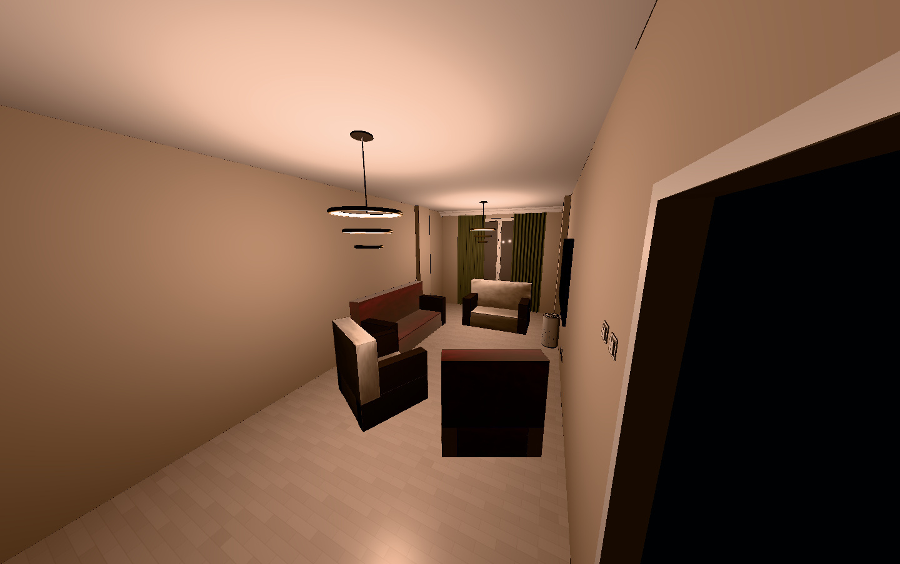

Salon, living / work room,
master bedroom.
Compare the decisions that matter: sofa fabric, BILLY body and doors, accent paint, curtains and desk tops. Kitchen and wet rooms are paused.
Repaired: one complete L-shaped sofa with no inside arm. All windows have two hinged uPVC sashes and a fixed central mullion.
Fixed: salon Jotun 1876 #D4CBB9; actual wall, door and mirror positions; sockets, ACs, fixtures and brass cabinet handles. BILLY now has three 80 cm cases plus one 40 cm case, with matching extensions. The row is centred with a 22 mm shift; the room door is shown at 90° to clear it, with its frame and hinge fixed. The baseline is walnut inside and out, with black wood-effect doors and clear glass.
Each group keeps the same camera and exposure. Suggestions change one category at a time and are not saved to the working plan. Bedding and cushions are styling props. These images preserve HView geometry; no AI room reconstruction is used.
Full brief, constraints and lighting · Exact values and capture settings · Saved changes · Wall and door clearance
Corrected room views


Living / work room


Master bedroom


Salon sofa fabric
Only seat and back upholstery changes. Wood arms, Jotun 1876 walls and furniture positions stay fixed.
Current burgundy / champagne
#54121d#ede6d6 6500 K2700 K
6500 K2700 K
Muted olive / oat
#62634d#c9bcaa

6500 K2700 K
Tobacco / flax
#88644c#c8b9a0

6500 K2700 K
Deep petrol / warm stone
#405957#b4aa98

6500 K

2700 K
Master bedroom accent wall
Only the window-side accent wall changes. Pale long wall, cream joinery, brass handles, mirror, door and headboard remain fixed. Neutral bedding is a styling prop.


Living / work room desks
Both desk tops change together. Legs, chairs, sectional sofa and desk placements remain fixed.


Salon curtains
Only curtain colour changes. Bedroom curtains are shown temporarily for this comparison; their saved hidden state is retained.
Current muted blue
#8aa6cc
 2700 K
2700 KFlax
#b7a58d

6500 K

2700 KMuted olive
#6b7053

6500 K

2700 K
Living / work room curtains
Only curtain colour changes. Bedroom curtains are shown temporarily for this comparison; their saved hidden state is retained.


Master bedroom curtains
Only curtain colour changes. Bedroom curtains are shown temporarily for this comparison; their saved hidden state is retained.


BILLY body and door combinations
Body includes shelves and backs. Door finish includes frames and knobs, including the extensions. Glass stays clear. The room door is temporarily closed for this close-up; the saved plan keeps it at 90 degrees.


What I would test first
Salon: keep the burgundy/champagne fabric as the reference and compare it with olive/oat. The selected walnut bodies with black BILLY doors link the dark furniture to the warm wall paint. Oak/black stays available as a lighter comparison. Flax curtains reduce the blue/burgundy contrast; muted olive is the stronger alternative.
Master bedroom: compare the current terracotta with muted olive before choosing curtains. The olive keeps depth beside the cream joinery and brass without adding another red-brown surface. Flax or warm stone curtains keep the window lighter. Keep the main pale wall unchanged.
Living / work room: start with birch or oak desk tops and oat curtains beside the dusty-blue sectional. Walnut is included to judge the darker option, but the lighter tops separate the work area from the dark chairs. Keep decor to small desk organisers and one wall print until these large finishes are chosen.
The hex swatches identify the base colours. Lighting changes the displayed pixels; these are planning comparisons rather than measured paint or fabric samples.